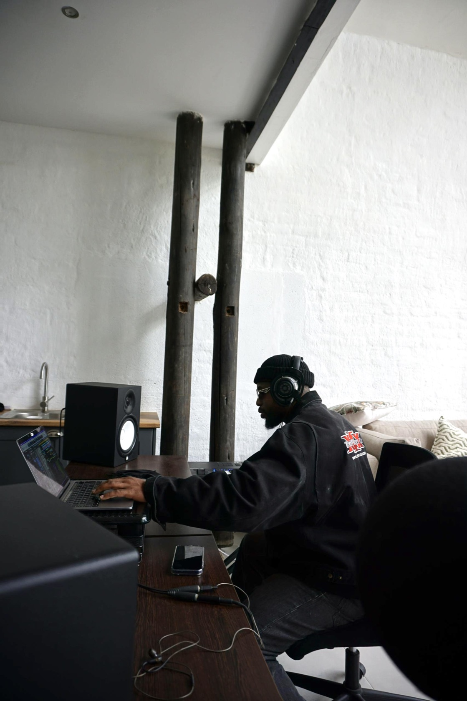

01 — The Story
A sound rooted in faith.
A vision without borders.
Behind the name Manuchie is Emmanuel Manuchie Chiwanga, a Zimbabwean music producer, songwriter, artist, and music director whose work has contributed to contemporary gospel and worship music in Africa and beyond.
His journey is shaped by a passion for building sounds, developing artists, and creating music that carries meaning beyond the studio.
Through his work with Zimpraise, Manuchie has contributed to major gospel projects through songwriting, musical arrangements, production, and music direction. His creative journey has also extended across borders, collaborating with artists and musicians whose work reaches international audiences.
His work with The Unveiled marked a defining chapter in his musical journey. Through songwriting and production, he helped shape standout records, including Mourning to Dancing, carrying the sound of Zimbabwean worship beyond the walls of the church.
His collaborations span genres and territories, including work with Annatoria on the Present Jesu Christmas Project featuring DC3, as well as collaborations with Gemma Griffiths, Peruzzi, Silas Magalhães, and other artists across the contemporary music landscape.
His work has also intersected with the international worship community through collaborations connected to Jenn Johnson and the wider Bethel Music platform, including projects such as Celebrate Africa featuring Britt Nicole.
Beyond the studio, Manuchie’s experience as a music director includes leading the musical direction for Jekalyn Carr’s Zimbabwe tour, bringing musicians and creative teams together to deliver a unified musical experience.
Today, Manuchie continues to build at the intersection of African creativity and global contemporary Christian music — producing records, developing ideas, and helping artists translate their vision into music that moves people.
For him, music is more than sound. It is ministry, storytelling, collaboration, and a lifelong pursuit of excellence.
- Based Harare, Zimbabwe · Australia
- Rooms Worship · Gospel · Contemporary
- Role Producer · Songwriter · Music Director · Keyboardist